Tolquane Web: the user guide¶
Tolquane Web is a page for the flows in one directory: a canvas of the blocks, the Python beside it, runs with live per-node counts, a history, schedules and the AI builder. It runs on your machine, and the flows it writes are ordinary files.
The file is the artifact and the canvas is a view of it. Every flow is a flow.py in
the house style, with build(source=None) and main(), so anything made
here runs with python flow.py on any machine that has pip install tolquane and
nothing else.
Install and start¶
pip install "tolquane[web]"
cd ~/flows
tolquane web
That starts a server on 127.0.0.1:8765, opens a browser at it, and takes the current
directory as the workspace: the directory whose .py files are the flows, and the
working directory every run starts in. --workspace DIR picks another one, --port a
different port, and --no-browser leaves the browser alone. The workspace, host and
port you save on the Settings page are what the next tolquane web starts with when
no flag says otherwise.
The server has no login because it is on loopback, where only this machine can reach it. To put it on a shared machine, bind wider and set a token:
tolquane web --host 0.0.0.0 --token "$(python -c 'import secrets; print(secrets.token_urlsafe(24))')"
Tolquane Web refuses --host anything but loopback without --token: anyone who can
reach the page can run code as you. Paste the token into the page once, where it asks
for it; the browser keeps it under localStorage['tolquane.token'] and sends it with
every request from then on. (Setting it by hand is the same thing:
localStorage.setItem('tolquane.token', '…') in the developer console.) See
Security for what the token does and does not cover.
A token is one secret for one person. Accounts are the other way in: the first user
turns sign-in on for everybody, and a server started with --token can make its first
administrator from the login page. See Users and sign-in.
tolquane web --check starts the server, asks /api/health, and stops. That is the
line for CI.
Users and sign-in¶
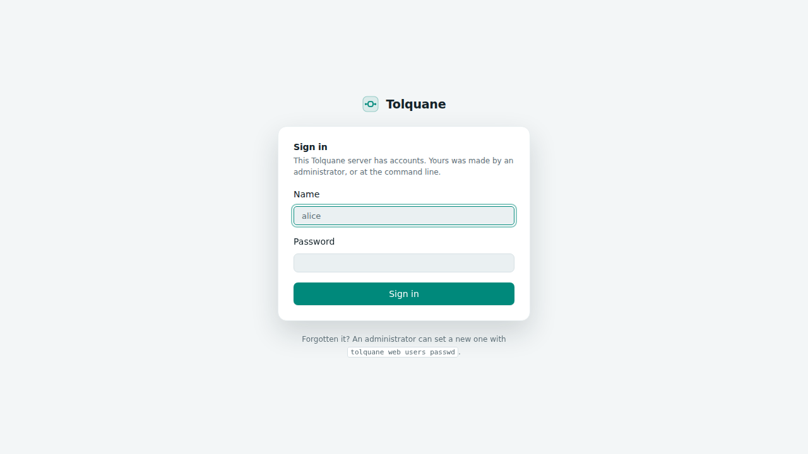
Whether you sign in depends on how the server was started and on whether anybody has an account yet. Three cases:
- A local server with no users. Loopback, no
--token, nobody added: no login. Every request is an implicit administrator calledlocal, and that is the name the runs and the schedules record. It is the default, and it is what 1.2 did. - A server with users. As soon as one account exists, everybody signs in, on loopback too. The account menu at the bottom of the sidebar says who you are.
- A server started with
--tokenand no users. The token is the only key, exactly as before, and the login page offers Create the first administrator. The token keeps working afterwards as an administrator's API token, for scripts and for setup.
The first user is the switch. Make one from the login page of a --token server, or at
the command line, which needs no server running:
tolquane web users add alice --admin # asks for the password, twice
tolquane web users list
tolquane web users passwd alice
tolquane web users disable bob
tolquane web users enable bob
These read and write the database tolquane web uses (~/.tolquane/web.db, or under
TOLQUANE_HOME), so they work while the server is down and they are the way back in when
nobody can sign in. --password gives the password on the line instead of at a prompt. A
duplicate name, a password under eight characters, an unknown user, or disabling the last
administrator each print one line and stop.
Roles. An administrator can do everything. A member does the work — flows, runs,
schedules, the AI builder, history — and nothing else: no Users page, no setting but the
theme, no word on whether an API key is stored or what address the server is on, the
names of the workspace environment variables but not their values, and no git init. A
route a role does not have answers 403.
Accounts. A user made in the app is given a temporary password, shown once, and is
asked to choose their own at the first sign-in; a user made at the command line keeps the
password whoever typed it chose. The account menu holds Change password, API
tokens… and Sign out. Names are lower case, two to thirty-two characters of letters,
digits, _, . and -; passwords are at least eight characters. A session lasts thirty
days, and using it puts that off again. Disabling a user ends their sessions at once.
There is always one administrator who can sign in: the last one cannot be deleted,
disabled or made a member.
API tokens, for scripts. A personal token is yours, carries your role, is shown once, and lasts until you delete it. Make one from the account menu, then:
curl -H "Authorization: Bearer $TOLQUANE_TOKEN" http://127.0.0.1:8765/api/runs
Every route takes it that way, and as ?token= on the run socket and on a download link,
neither of which can carry a header.
Flows¶
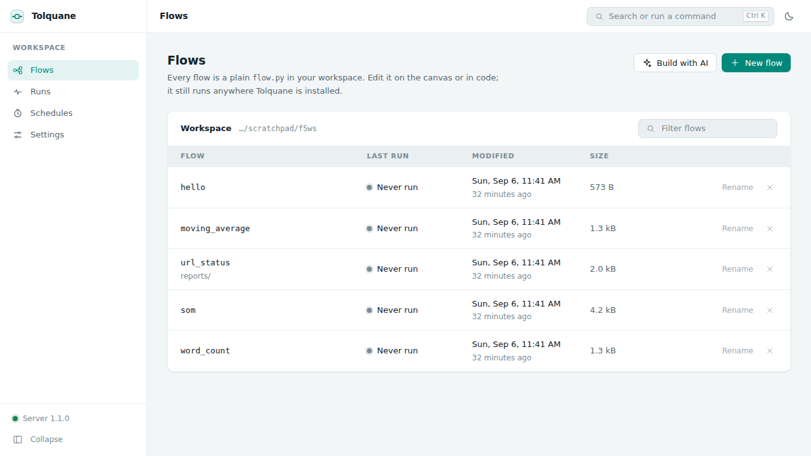
The first screen lists every .py file in the workspace, when it changed, how big it is
and how it last ran. Hidden directories, __pycache__, node_modules, virtualenvs and
Tolquane Web's own .tolquane-web/ are left out; so is a symlink pointing out of the
workspace.
New flow writes a small template and opens it. Build with AI opens the same editor with the AI panel in front, for describing what you want instead. Clicking a row opens it; Rename moves the file and its layout sidecar together, and the cross deletes both.
The editor¶
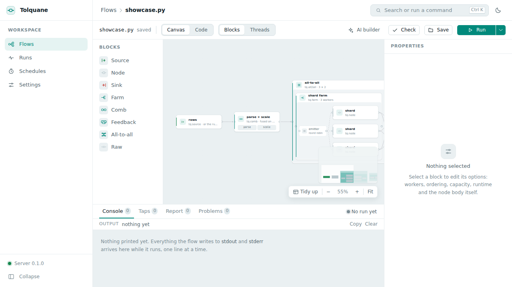
The canvas shows blocks, not threads: the things you write. A source, a node, a sink,
a farm with its worker inside it, a comb, a feedback loop, an all-to-all pair, and a raw
node. >> is an edge. Drag a kind from the palette on the left onto the canvas to add
it, drag from one card's handle to another to connect them, and select a card and press
Delete to remove it.
Blocks / Threads switches to the expanded graph — the emitters, the workers, the
collectors, everything that will actually run, the same picture tq.draw prints.
It is read-only: it is what the blocks become.
Tidy up lays the cards out again (a file with no saved layout is laid out automatically the first time it opens). The zoom controls and Fit are next to it.
Code, and the two-way sync¶
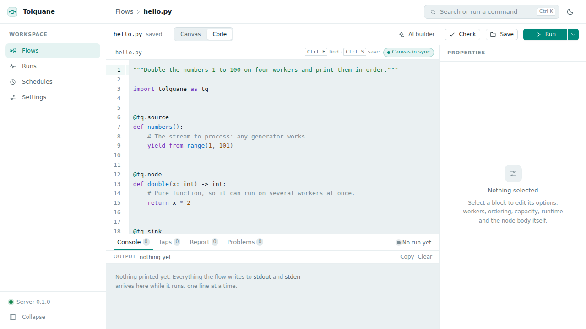
Canvas / Code switches to the whole file in an editor. The two views are the same flow:
- An edit on the canvas regenerates the Python. The generated code is what the house
style asks for and passes
ruff, and node bodies are kept exactly as written: a round trip never reformats what you typed. - An edit in the code re-parses about half a second after you stop typing, and the
canvas catches up. The badge by the file name says
Canvas in syncwhen it did.
Nothing is ever reverted. If the parser cannot model what you typed, the file stays exactly as it is and the panel underneath says which line stopped it; the flow drops to code-only mode until it can be modelled again.
Ctrl S (⌘S) saves. If the file changed on disk since it was opened — you edited it
in another editor, or the AI builder wrote it — saving shows both versions instead of
overwriting.
The properties panel¶
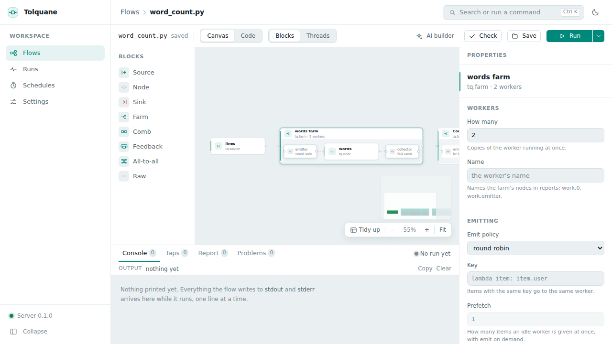
Select a card and the panel on the right holds every option that block has: how many workers, the emit policy (round robin, on demand, broadcast, scatter, by key) and its key, the collect policy, ordering, prefetch, capacity, the runtime for that block, its name, and custom emitter and collector ends. The node's own body is editable there too. Every change goes straight into the code.
Check¶
Check runs tq.check on the flow in a child process and answers with the node and
edge counts, or with the GraphError as it stands — Tolquane's errors already say what
to fix. A problem that belongs to one block is marked on that card and listed in the
Problems tab of the drawer.
Running¶
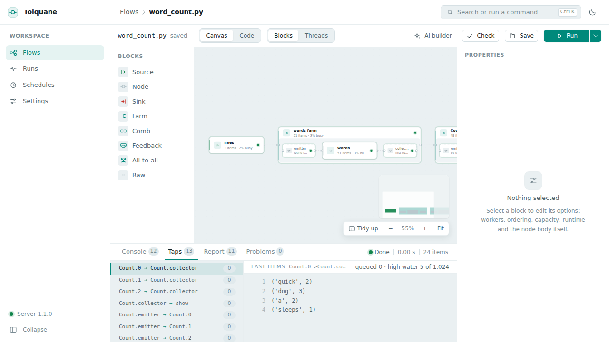
Run starts the flow in a child process, never in the server, so a flow that hangs or crashes costs one process and nothing else. The arrow next to it opens the options:
- Input: the flow's own source, or one of the samples saved with the flow. Manage
samples is where you add one — a list of JSON values that is fed to
build(source=…)in place of the source node. - Runtime: threads, processes or sync. Sync runs one node at a time in a fixed order, which is the one to reach for when something is wrong.
- Tap items: keep the last five items that crossed every edge, for the Taps tab.
- Chrome trace: write a trace file, downloadable from the report afterwards, that opens in Perfetto.
Ctrl ↵ (⌘↵) runs with whatever those options are set to.
While it runs, each card carries its state colour (not started, running, waiting, done, failed), how many items it has taken and produced, and what percentage of the time it was busy; each edge carries its queue depth. Waiting is back pressure, not an error.
The drawer at the bottom has four tabs:
- Console: everything the flow printed,
stdoutandstderr, as it arrives. - Taps: one row per edge, and the last items that crossed it.
- Report: the table
tq.runreturns — items in and out, busy and wait time per node, the busiest one marked. The trace file downloads from here. - Problems: errors and deadlock reports, each pointing at the card it is about.
Cancel sends the run SIGTERM, and SIGKILL if it has not stopped after
cancel_grace seconds.
Parameters and environment¶
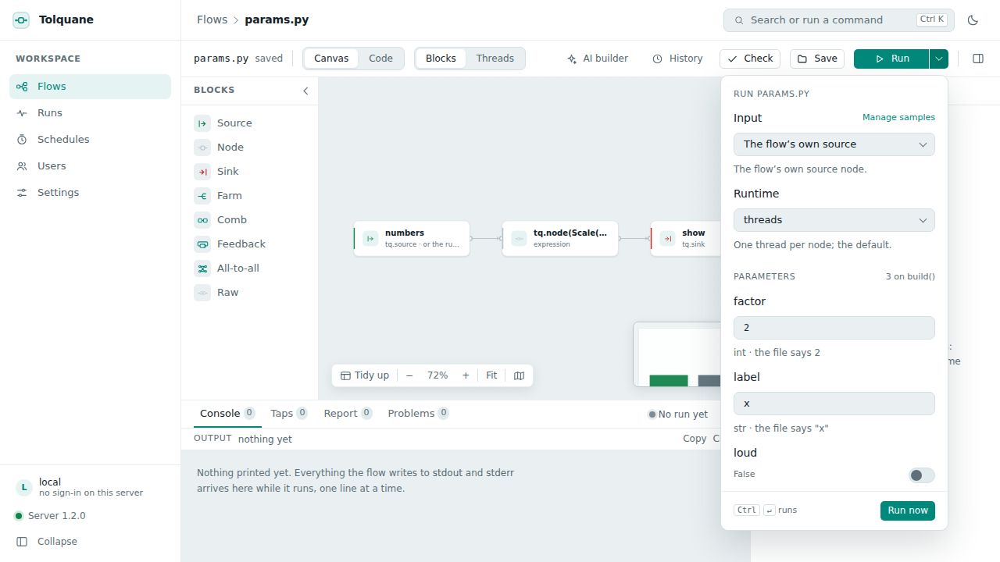
A flow can take parameters. They are keyword-only arguments of build, after source,
each with a literal default:
def build(source=None, *, factor: int = 2, label: str = "x", loud: bool = False):
...
The defaults are what the file does on its own, so python flow.py still runs and still
needs nothing. A parameter with no default, or one whose default is not a literal, is
something the canvas cannot model: the flow drops to code-only mode and says which one.
The Run popover lists them under Parameters, one field per parameter, typed from the
default — a number, a toggle, a text box, or a code field for anything else — with what
the file says written underneath. The values you used last are remembered per flow, in
the browser. The schedule dialog has the same section and keeps its values with the
schedule. Parameters are added, renamed, retyped and removed in the properties panel of
the start card, which is an edit of build() like any other.
From the command line:
tolquane run flow.py --param factor=4 --param label=z
tolquane check flow.py --param factor=4
--param repeats, and works on run, check, explain and draw. The value goes
through ast.literal_eval, so 4 is an integer and a plain word stays a string. A name
the flow does not declare is an error that lists the ones it does.
Environment. The popover's Environment section sets variables for that one run;
tolquane run flow.py --env GREETING=world does the same at the command line, and a
schedule carries its own. Settings → Workspace environment is given to every run in
the workspace, before the run's own variables: a key or a database URL a flow needs
belongs there rather than in the file. The server's own API keys, the SMTP password and
the access token are taken out of every child's environment before any of this is
applied, so a flow never inherits them.
The interpreter. Settings → Interpreter is the Python that runs the flows; unset,
it is the one the server itself runs on. Saving it runs it: an interpreter without
Tolquane, or with a different major version, is refused with the pip install tolquane
line that fixes it. A bare name is looked up on PATH, and a virtualenv that has since
been deleted falls back to the server's own interpreter rather than making every run
fail. Check, Explain, Draw and Optimize use it too, and the Run popover names it.
A missing import. Check also asks that interpreter to import what the file
imports. Whatever it cannot import comes back in Problems as a warning with the line that
fixes it — pip install opencv-python for cv2, and the same for PIL, sklearn,
yaml, bs4 and dotenv. The standard library, tolquane itself and the modules
sitting next to the flow are not asked about. A flow that fails to check because of the
missing module gets the warning as well: it is the same problem, and the fix is the line
under it.
Runs¶
Every run is recorded: the flow, when, how long, the runtime, the trigger (manual, a
schedule, or a retry of one), who started it, the parameters and variables it was given,
the status and the busiest node. Opening one shows its report and its log — the last
64 KB of what it printed — the messages it sent if it was a schedule with
outcomes, and Run again, which starts the same flow on the same
runtime with the same sample. The history lives in ~/.tolquane/web.db.
History¶
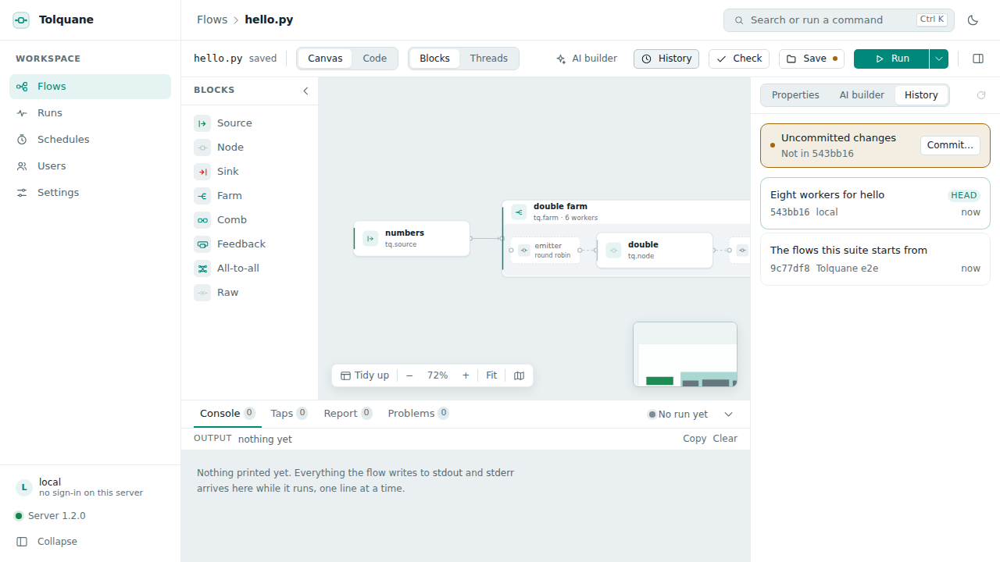
The versions of a flow are git's, not Tolquane's. Two things have to be true: git on the
PATH, and the workspace inside a repository. When either is missing the History tab says
so, in git's own words, and an administrator can press Initialize history: that runs
git init in the workspace and writes a .gitignore with .tolquane-web/ and
__pycache__/.
History is the third tab of the right column, beside Properties and the AI builder. It
lists the commits that touched this flow — the short hash, who made it, the message, how
long ago — with HEAD marked, and Uncommitted changes on top when the file differs
from the last commit; the Save button carries a dot while that is true. Clicking an entry
shows its diff against the file as it is now.
Restore writes that version back over the flow and its layout sidecar. It is a write,
not a commit and not a checkout: the file becomes what it was, the change shows as
uncommitted, and you save it, or restore HEAD again, as you like.
Ctrl Shift S (⌘⇧S) saves with a message: a small dialog, and the save commits the flow
and its sidecar with what you typed. Settings → History → Commit on save does it for
every save, with Edit <path> when no message was given; the toolbar says which of the
two happened, and says so when there was nothing to commit. Apply in the AI panel
fills the next message in for you: AI: <the first line of what you asked>.
Only the flow's own two files are ever added, by name, so a commit never sweeps up
whatever else was uncommitted, and a commit is authored as you, at
<name>@tolquane.local. Nothing here runs push, reset or checkout. A commit git
refuses does not undo the save: the file is written, the commit is not made, and the
server log says why. Asking for a commit in a workspace that is not a repository is
refused before anything is written.
Schedules¶
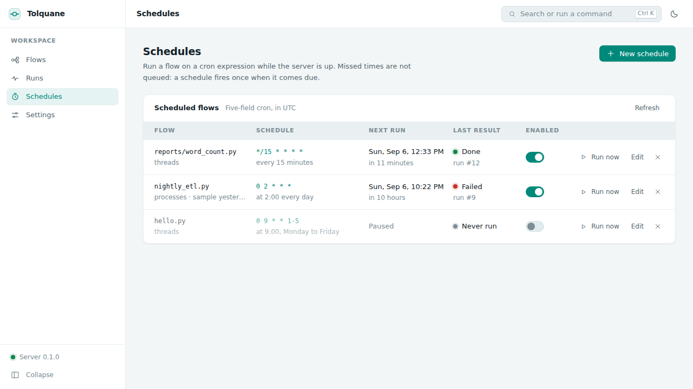
A schedule is a flow, a five-field cron expression, an optional sample and a runtime, with the same parameters and variables a run takes and its own outcomes. The editor offers the usual shapes as presets — every few minutes, hourly, daily, weekdays, weekly, monthly — and a custom field for anything else. Whatever it comes to is shown back as a sentence with the next five times it fires, so an expression is never a guess.
Times are the machine's own zone, the one the page names next to the table, not UTC.
Schedules fire only while the server is up, and a time that passed while it was down does not queue: a schedule that missed four nights fires once, not four times. Run now fires one immediately.
Schedule outcomes¶
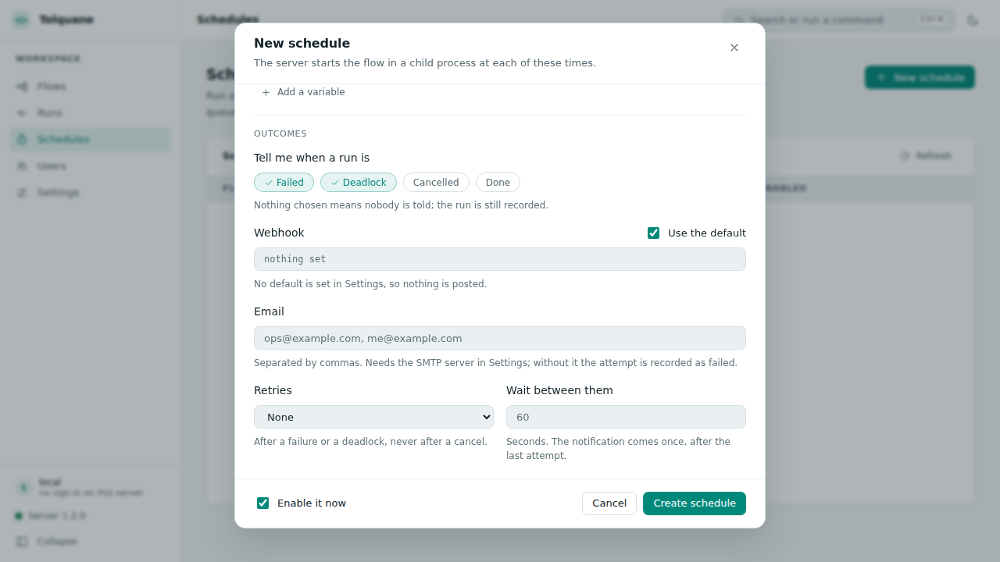
A schedule runs when nobody is watching, so it can say how it went and try again.
Tell me when a run is picks the statuses worth a message: failed, deadlock, cancelled, done. Nothing picked means nobody is told, which is the default; the run is recorded either way.
Webhook. One POST of JSON: the event and the final status, how many attempts it
took, the flow, the schedule with its cron, the run record itself, the busiest node, the
error, the last 2 KB of the log, and the address of the run's page. Ten seconds to answer,
and one retry thirty seconds later. A schedule with no URL of its own uses Settings →
Notifications → Default webhook.
Email. Addresses separated by commas. Mail needs an SMTP server in Settings →
Notifications — host, port, user, the address it comes from, STARTTLS — and without one
the attempt is recorded as failed, with that as the reason. The password is not a setting:
it goes to ~/.tolquane/web.toml beside the API keys, mode 600, and is never echoed back
to the page. TOLQUANE_SMTP_PASSWORD in the server's environment does instead.
Retries. Zero to five, with a wait in seconds between them. A retry follows a failure or a deadlock, never a cancel. Each attempt is a run of its own on the Runs page, so the chain is there to read; the message comes once, after the last attempt, with the final status and how many there were.
Send a test delivers one message now, to every target the schedule has, describing its last run — or a placeholder, when it has never had one. It does not retry, since somebody is waiting for the answer, and it reports a line per target. A schedule with no webhook, no addresses and no default has nothing to test and says so.
The schedule list shows a bell where notifications are set, and the last outcome. Every attempt is kept and listed on the run itself: a webhook that failed and then succeeded leaves both rows. Retries and deliveries live in the running server, so a server stopped between two attempts drops what was pending.
The same flow, anywhere¶
Nothing Tolquane Web writes needs Tolquane Web to run:
python flow.py # or: tolquane run flow.py
scp flow.py server: # and it runs there with pip install tolquane
The file is the whole flow. build(source=None) returns the graph and main() runs it,
which is what tolquane check, run, explain, draw and optimize expect of any
file, and what a cron line or a CI job can call. The canvas positions and the samples
are in the sidecar next to it, and a machine that ignores the sidecar loses nothing but
the layout.
The AI builder¶
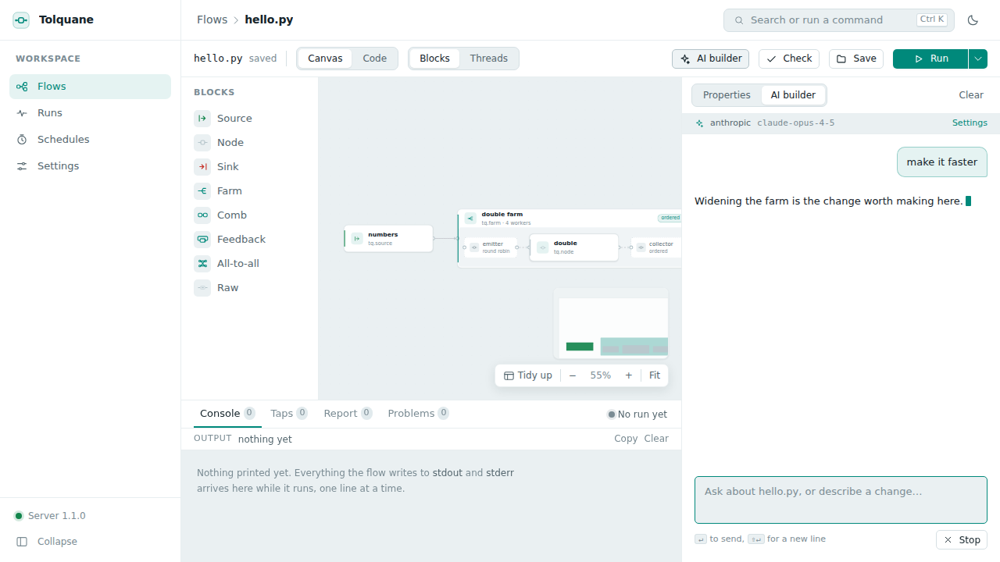
AI builder opens a chat beside the editor. It is the same tolquane.ai.Builder the
tolquane build command uses, given the open flow and the chosen sample as context. It
writes, checks and runs a flow in a scratch directory of its own — never over your open
file — and streams its turns and its tool calls into the panel. When it has written
something, the panel offers the diff and Apply, and the canvas updates when you take
it.
The key goes in Settings → AI builder: a provider (Anthropic or OpenAI), an optional
model id, and the key itself. Keys are written to ~/.tolquane/web.toml with owner-only
permissions (mode 600) and never enter the database, a flow, or an answer from the
server — the settings page is only ever told whether a key is stored. A key exported
as ANTHROPIC_API_KEY or OPENAI_API_KEY before starting the server works too, and
needs no setting at all.
Settings¶
Everything on the Settings page is kept in the same SQLite database as the runs
(~/.tolquane/web.db), except the API keys and the SMTP password, which are not:
| Setting | What it does |
|---|---|
workspace |
The directory the flows live in, for the next start |
env |
Variables given to every run in the workspace, before the run's own |
python |
The interpreter runs, checks, draws and optimizes use (the server's own) |
default_runtime, default_batch |
What a run uses when it does not choose |
exec_timeout |
How long a parse, check, draw or optimize child gets (30 s) |
max_concurrent_runs |
How many runs may go at once (4); beyond it a run is refused |
max_source_bytes |
The largest flow the server will write (2 MB) |
cancel_grace |
Seconds between SIGTERM and SIGKILL on cancel (10) |
keep_traces_days |
How long traces and samples survive in .tolquane-web/ (7) |
auto_commit |
Commit the flow and its sidecar on every save (off) |
notifications.webhook_default |
Where a schedule with no webhook of its own posts |
notifications.smtp |
The mail server schedule outcomes use; its password is a key |
theme |
Dark, light, or whatever the system says |
Host, port and token are shown but not editable: they are start-up options, so changing
them means restarting with --host, --port or --token. A member sees the page, but
only the theme is theirs to change; the server's own section and the keys are not shown
to them at all.
What is on disk¶
For a flow called hello.py, in the workspace:
hello.py the flow: the artifact, and all of it
hello.layout.json the sidecar: card positions, the viewport, the samples
.tolquane-web/ traces, sample files and the builder's scratch
The sidecar is the canvas's own file. Positions never go into the .py, so a flow
opened on a machine that has never seen Tolquane Web is laid out automatically and
nothing is missing; deleting the sidecar loses the layout and the samples and nothing
else. Both are worth committing — the sidecar is small, and its samples are the inputs
your flow is tested with.
.tolquane-web/ is Tolquane Web's own directory and is not worth committing. Traces and
samples in it are cleared at startup once they are older than keep_traces_days.
Runs, schedules, settings, accounts, sessions and the record of what was notified are
in ~/.tolquane/web.db. Passwords are scrypt hashes with a salt each, and a session or
API token is kept only as its SHA-256: neither is ever there as text. The API keys and the
SMTP password are in ~/.tolquane/web.toml, mode 600, and nowhere else.
Keyboard shortcuts¶
| Key | Does |
|---|---|
Ctrl K / ⌘K |
The command palette: every action, by name |
Ctrl S / ⌘S |
Save the open flow |
Ctrl Shift S / ⌘⇧S |
Save with a commit message |
Ctrl ↵ / ⌘↵ |
Run the open flow |
Ctrl Z / ⌘Z, Ctrl Shift Z or Ctrl Y |
Undo and redo on the canvas |
Ctrl F / ⌘F |
Find, in the code view |
Delete |
Remove the selected card |
↵ / Shift ↵ |
Send, and a new line, in the AI panel |
Esc |
Close the palette or a dialog |
Troubleshooting¶
The port is in use. tolquane web --port 8899, or stop whatever holds 8765. Another
Tolquane Web is the usual answer; they share the same database, so two of them on one
machine is one too many.
"The Tolquane server is not reachable". The banner across the top means the page is
still there but the server is not answering; it retries every five seconds. Start it
again with tolquane web in the workspace and the banner goes on its own. Nothing typed
is lost, but nothing can be saved until it is back.
A flow opens read-only, saying it cannot be modelled. That is code-only mode. The
file is fine — it is Python the canvas cannot represent, usually a graph built at run
time, a Graph.link topology, or a build() that does more than compose blocks. The
code editor, Check, Run and the whole drawer work as usual; the canvas shows the
expanded graph read-only instead of the blocks. The banner names what stopped the
parser. To get the canvas back, move the part it cannot read into a node body, or let
the AI builder rewrite the file in the house style.
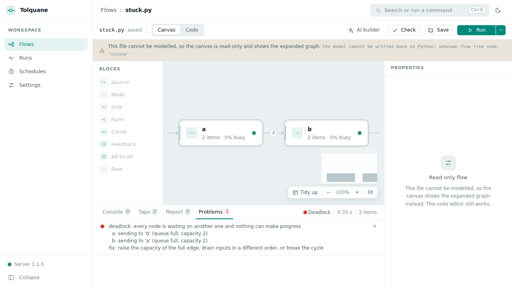
A flow hangs. It will not hang for ever: Tolquane's watchdog notices that every node
is waiting on another one and ends the run with a deadlock report, which arrives in the
Problems tab naming the nodes, what each was waiting for, and the fix — usually a
capacity to raise or a cycle to break. Cancel stops a run that is merely slow. A run
whose child ignores both SIGTERM and SIGKILL is recorded as failed rather than left
saying "running" for ever.
Every request answers 401 on a server started with --token. The token in the
browser is missing or wrong. Set it again —
localStorage.setItem('tolquane.token', '…') in the developer console, then reload —
or restart the server without --token if it is only ever reached from this machine. On
a server with accounts, a 401 means the session has gone instead: the page sends you to
the sign-in form and back to where you were.
Nobody can sign in. Passwords are set from the command line as well as from the page,
and no server has to be running: tolquane web users passwd alice, or
tolquane web users add alice --admin if there is no administrator left.
tolquane web users list says who there is.
A run is refused with "429". max_concurrent_runs runs are already going. Wait,
cancel one, or raise the limit in Settings.
The page loads but nothing works, and the browser console says something about the Content Security Policy. The policy the server sends allows the app's own scripts and styles and nothing else; a browser extension injecting into the page is the usual cause. See below.
Security¶
Tolquane Web runs flows: it is a program that executes code you give it, with your privileges. What it does about that:
- Loopback by default. With no
--host, only this machine can reach it, and with no accounts either, no login is needed.--hostanything else is refused unless--tokenis given. - One token, everywhere. With a token set, every route under
/api, the run WebSocket and the AI event stream need it — asAuthorization: Bearer <token>, or as?token=on the socket and on a download link, neither of which can set a header. Tokens are compared withhmac.compare_digest, and never written to a log: a URL that carries one is logged withtoken=<hidden>. The static files are served without it, since the page is what asks you for the token. Paste it once and the browser keeps it. - Accounts, when you want them. One user made and every request needs a session or
an API token, on loopback too. Passwords are
hashlib.scrypthashes, a salt each, never text; a session token issecrets.token_urlsafe(32)kept as its SHA-256, and expires thirty days after it was last used; an API token is the same without the expiry. Disabling a user ends their sessions at once, deleting one takes them with it, and a password change leaves the open sessions alone — it is made from one of them. - Roles, not only a door. Settings, the keys, the users and
git initbelong to an administrator; a member has the flows, the runs, the schedules, the AI panel and the history. Which routes need which is a table in the server rather than a check written out route by route, and a route a role does not have answers 403. - The workspace is a fence. Every path a request names is resolved inside the
workspace, whether it is being read, written, renamed or created.
.., an absolute path, a Windows drive or share, and a symlink whose target is outside are all refused, and so is a layout sidecar that points away. The listing skips what it would refuse to open. - No secrets in a child. A flow runs in a child process whose environment has had
ANTHROPIC_API_KEY,OPENAI_API_KEY,TOLQUANE_SMTP_PASSWORDand the access token taken out of it, and so do the children that parse, check, draw and optimize. The workspace environment and the run's own variables are applied after that, so a flow gets what you gave it and nothing the server keeps. The AI builder is the one thing that needs a key, and it is handed one directly. - Bounded. At most
max_concurrent_runsruns at once; a source overmax_source_bytesis refused with 413; a run's events are kept to a bounded number in memory, so a flow printing a million lines costs the server nothing (the socket says how many events it could not keep, and the log and the report are still whole). - Same origin, no CORS. No
Access-Control-Allow-Originheader is ever sent, so a page on another site cannot read an answer out of this server even from your own browser. The app's own page comes withX-Content-Type-Options: nosniffand a Content Security Policy that allows scripts from this server only (the one inline script the built page carries is allowed by its hash), connections to this server and its WebSocket, and nothing else. Styles are the single exception:style-srcallows'unsafe-inline', because the code editor and the canvas write their own stylesheets into the page as they load.
What it is not: there is no HTTPS. Passwords, session tokens and everything else go over
plain HTTP, so on a shared machine put the server behind an SSH tunnel
(ssh -L 8765:127.0.0.1:8765 host) and leave it on loopback, which is better than a
password on the wire. Accounts say who may do what on one server; they are not a fence
between people's files. Everybody who signs in shares the one workspace, and a member can
run a flow, which is running code on that machine as the user who started the server.